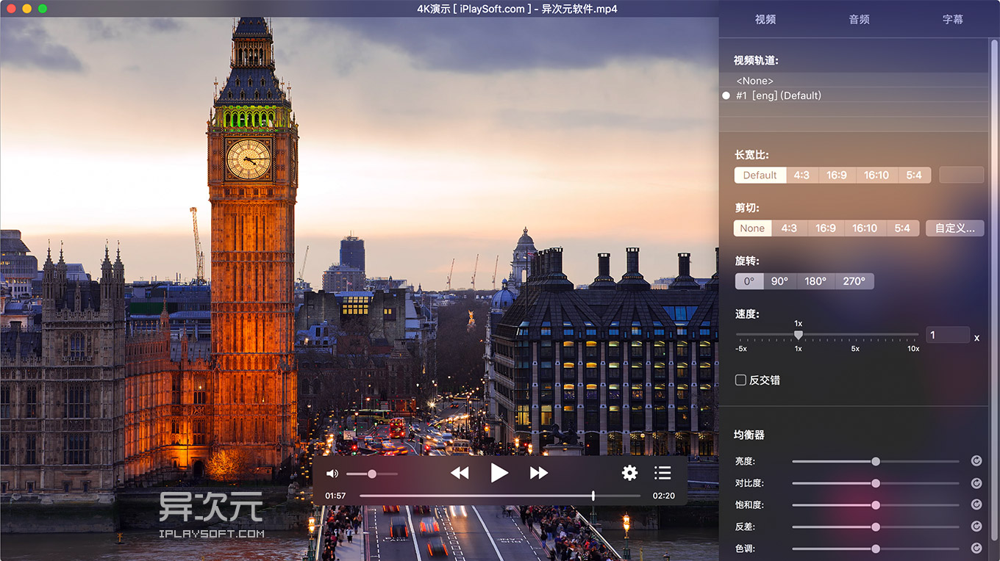
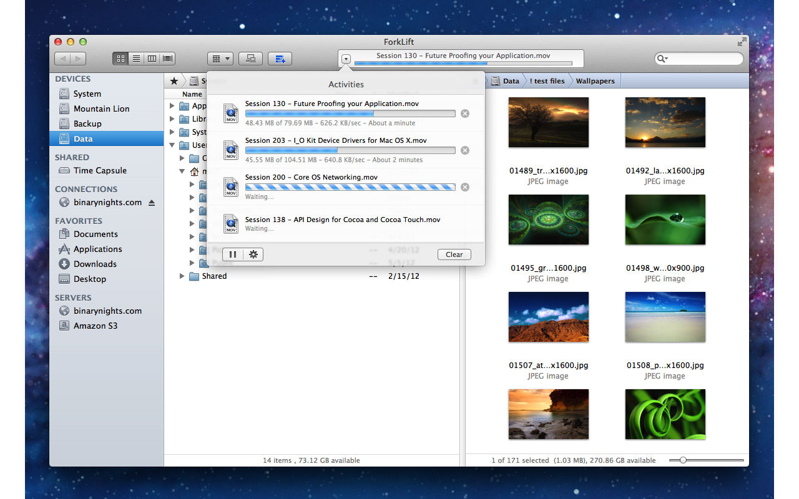
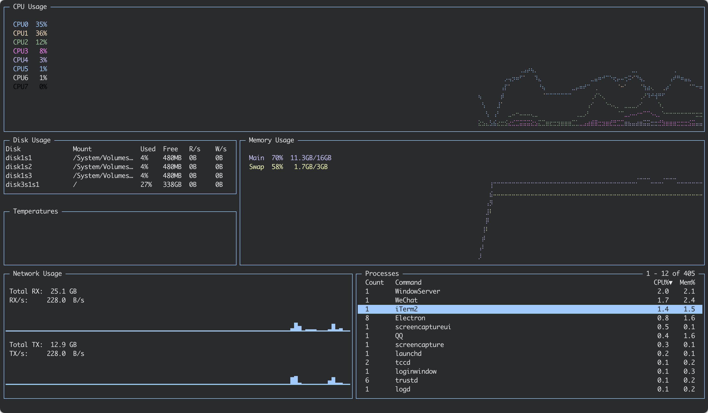

下面列举一些 Mac 下开发者可能常用到的软件，大多数都是免费的，某些收费的软件同时提供了免费版，其功能大多时候也能够满足常用需求。
Homebrew
Homebrew 简称 brew，是 Mac OSX 上的软件包管理工具，能在 Mac 中方便的安装软件或者卸载软件，可以说 Homebrew 就是 Mac 下的 apt-get、yum 神器，安装软件只需要一个命令。
Homebrew 主页为 https://brew.sh/index_zh-cn.html，安装 Homebrew 只需要在终端执行下面的 Ruby 代码即可:
1 | /bin/bash -c "$(curl -fsSL https://raw.githubusercontent.com/Homebrew/install/HEAD/install.sh)" |
常用命令可参考 http://qtdebug.com/mac-homebrew，Mac 下 brew 切换为国内源。
Homebrew 有 2 种安装方式：
- 命令行软件：
brew install xxx - 有界面软件：
brew install xxx --cask
不喜欢 Homebrew 的命令行? 可以使用客户端 Cakebrew 进行管理:
清除不使用的文件 (homebrew-leftover-scanner):
- 安装:
brew tap jysperm/leftover-scanner - 扫描:
brew scan-leftovers - 根据提示删除
iTerm
iTerm2 is a replacement for Terminal and the successor to iTerm. It works on Macs with macOS 10.8 or newer. iTerm2 brings the terminal into the modern age with features you never knew you always wanted.
主页为 https://iterm2.com，各种使用技巧请自行搜索，非常多。
提示:
- iTerm 配合 expect 脚本实现 ssh 自动登录（Mac 默认支持 expect 脚本，不需要再安装软件了）
- 需要 ssh 登录很多机器，可以配合上 shuttle 来进行管理这些机器，点击一下就自动登录了，比 iTerm 的 Profiles 更方便一些
Shuttle
使用 Shuttle 来管理命令的快捷方式，例如 SSH 的登录等，不再需要记命令和 IP 了。主页: http://fitztrev.github.io/shuttle/，使用帮助可参考 http://qtdebug.com/mac-shuttle/。
Expect 脚本 ssh 自动登录
推荐使用 expect 脚本 ssh 自动登录，可以结合上面的 shuttle 一起使用。
Zsh + Powerline
给 Mac 的 Terminal 设置很酷的效果，还能显示 Git 的不同状态:

具体设置参考 Mac Terminal Powerline-Shell。
IDEA
Java 开发的 IDE，个人觉得比 Eclipse 好用，默认支持 Gradle 和 Maven 模块，到 https://www.jetbrains.com/idea 下载。
MindMaster
亿图的思维导图，提供了很多模板，虽然不够漂亮，但是功能强大，免费版功能很不错，值得一试: http://www.edrawsoft.cn/mindmaster/。
XMind
一款全新的思维导图软件，https://www.xmind.cn/desktop/，免费版导出的图片 / PDF带有水印，比 MindMaster 轻便:

RestClient Insomnia
Insomnia is a powerful HTTP and GraphQL tool belt: Free and open source on Mac, Windows, and Linux。
DoHttp
Simple Http util, helps you make request to web service, 虽然没有 Google 的 Postman 功能强大，但是普通使用足够，体验比 Postman 更好，App Store 里下载。
MongoDB 客户端
Robo 3T 是轻量级跨平台的 MongoDB 客户端, 支持 3 种显示模式: Tree, Table, JSON。

PDMan
PDMan 是一款开源免费的数据库模型建模工具，是 PowerDesigner 之外另一种更好的选择。支持 Windows、Mac、Linux 等操作系统，具有上手容易，使用简单的特点:
- 数据库建模
- 生成 DDL 脚本并执行
- 支持目前主流数据库
- 数据库逆向解析
- 导出 WORD、PDF、HTML
- MarkDown 四种格式的文档
- 自定义模板生成程序代码

MAMP
一个应用集成了 Apache Server、MySQL、MySQL Web 端管理工具 phpMyAdmin、Nginx 等，开发的时候就不需要一个一个的去安装了，主页 https://www.mamp.info/en。
Sequel Pro
Sequel Pro is a fast, easy-to-use Mac database management application for working with MySQL databases. 主页为 https://sequelpro.com。
Sequel Ace
Sequel Pro 很久不更新了，Sequel Ace 是 Sequel Pro 的非官方开源新分支，支持 Silicon，可以在 App Store 搜索下载。
TablePlus
Modern, native, and friendly GUI tool for Redis, relational databases: MySQL, PostgreSQL, SQLite & more，免费可以使用 2 个 Tab，要求不高的话足够使用，下载请访问 https://tableplus.io。
SQLPro for Oracle
SQLPro for Oracle is a lightweight Oracle database client, allowing quick and simple access to Oracle Servers.
App Store 下载。
MyCli
MyCli 是一个 MySQL 的命令行客户端，可以实现自动补全（auto-completion）和语法高亮，具体特性如下:
- 智能补全
- SQL 语法高亮显示
- 自动完成输入 SQL关键字以及数据库列表
- 支持 tab 自动补全
SELECT * FROM <tab>只显示表名SELECT * FROM users WHERE <tab>只显示列名- MySQL 的输出会通过 less 命令进行格式化输出
- 支持 ssl 连接

使用帮助可参考 http://qtdebug.com/mysql-mycli/
LiteCli
LiteCli 是 Sqlite 客户端，和上面的 MyCli 差不多。
A command-line client for SQLite databases that has auto-completion and syntax highlighting.
可以使用 brew 安装: brew install litecli
PgCli
PgCli 是升级版的 psql 数据库链接工具，和上面的 MyCli 差不多。
This is a postgres client that does auto-completion and syntax highlighting.
Dash
Dash 是一个 API 文档浏览器，以及代码片段管理工具，支持几十中编程语言、框架的帮助快速查询。
Dash is an API Documentation Browser and Code Snippet Manager. Dash stores snippets of code and instantly searches offline documentation sets for 150+ APIs (for a full list, see below). You can even generate your own docsets or request docsets to be included.
GitHub Desktop
GitHub 的客户端，请到 https://desktop.github.com 下载。

GitUp
免费的 Git 客户端，简洁、漂亮，主页 http://gitup.co
Work quickly, safely, and without headaches. The Git interface you’ve been missing all your life has finally arrived.
笔记软件 Notable
Notable 使用 Tag 分类管理笔记, 支持多级 Tag，比较喜欢的是它的只读和编辑模式是分开的，默认为只读模式，因为大多数时候是使用只读模式进行阅读，不担心在阅读的时候误修改了文档内容。
The markdown-based note-taking app that doesn’t suck.
I couldn’t find a note-taking app that ticked all the boxes I’m interested in: notes are written and rendered in GitHub-flavored Markdown, no WYSIWYG, no proprietary formats, I can run a search & replace across all notes, notes support attachments, the app isn’t bloated, the app has a pretty interface, tags are indefinitely nestable and can import Evernote notes (because that’s what I was using before).
Keka
免费的解压软件，支持多种压缩格式的解压和压缩，压缩时可以排除 Mac 的 .DS_Store 文件，压缩时使用 7z 格式能够解决 Mac 和 Windows 解压后中文名乱码问题。主页 http://www.kekaosx.com/en/。
解压软件 Unar
Unar 可以解压 zip, rar 等并且中文不乱码:
- 查看压缩包:
lsar x.zip - 解压压缩包:
unar x.zip，unar x.zip -o foler
使用 brew 安装 brew install unar。
iCHM
CHM 阅读器，App Store 中国区已经找不到了，搜索 iCHM 2.1.3 版下载吧。
Typora
所见即所得的 Markdown 编辑器，有多种主题可供选择，主页 https://typora.io，目前已收费，功能相似的免费替代品可以使用 MarkText。
Clock Mini
在 Dock 中显示时间，有白色和黑色 2 个主题可选，当把菜单栏隐藏的时候查看时间就很方便了，App Store 下载。
TeamViewer
TeamViewer 是一个能在任何防火墙和 NAT 代理的后台用于远程控制，桌面共享和文件传输的简单且快速的解决方案。为了连接到另一台计算机，只需要在两台计算机上同时运行 TeamViewer 即可，而不需要进行安装（也可以选择安装，安装后可以设置开机运行）。该软件第一次启动在两台计算机上自动生成伙伴 ID。只需要输入你的伙伴的 ID 到 TeamViewer，然后就会立即建立起连接。相容于 Microsoft Windows、Mac OS X、Linux、iOS、Android 操作系统，也可以透过网页浏览器连线已安装 TeamViewer 的电脑。该软件可以轻易的穿透防火墙。TeamViewer 可在几秒钟内连接到世界各地的任何 PC 或服务器上。可以身临现场般地远程控制伙伴的 PC。TeamViewer 有超过 2 亿用户。中文主页 https://www.teamviewer.com/zhcn。
BetterAndBetter
BetterAndBetter 是一个集合了各种实用功能的免费软件，包含
- 触摸板: 例如给触摸动作设置快捷键
- 快捷键: 例如使用快捷键打开或者激活程序
- 窗口管理: 例如左右分屏、窗口最大化、窗口居中等
- 滚动截图
- 任务栏显示系统状态
- Safari 中拖拽打开链接
等等功能，有了它，就不再同时需要 JiTouch, Spectable, Snap, Xnip 等几个软件了，总体完成度不错，但是好多功能和其他的专一的软件比起来又不够完善。最终我还是放弃了它，原因是打开 BetterAndBetter 的时候，触摸板有时候会受影响，例如双指滑动，改变双指的位置，例如左右，上下，倾斜一些，会发现有时候滑动不会被识别，忽然来这么一下，感觉挺别扭的。
Snap
使用快捷键快速启动、激活失去焦点的程序，App Store 下载。
Thor
Snap 在 Monterey 里用不了，Thor 是个很好的替代品，App Store 里搜索下载。
对于我来说唯一的缺点是切换 Finder 有 Bug，使用 Hammerspoon 来解决这个问题。
Cinch
Cinch 可以像 Win7 一样拖动程序的窗口到屏幕边上时快速把窗口分成左一半、右一半、甚至把窗口放大到全屏。免费版可以永久使用，只是偶尔会提示你购买，功能和收费版没有区别，主页为 http://www.irradiatedsoftware.com/cinch/。
Spectacle
功能和 Cinch 差不多，功能更多，只不过是使用快捷键快速的把窗口分成左一半、右一半、放大到全屏，移动到下一个屏幕等。主页为 https://www.spectacleapp.com。
注意: 不支持 Silicon 芯片。
Rectangle
在 Silicon 架构下，窗口管理软件推荐使用 Rectangle，功能与上面的 Spectacle 差不多，也可以拖拽窗口进行管理。

Hammerspoon
可以替代前面提到的快捷键软件 Thor 和窗口管理软件 Rectangle，但没有界面操作，需要会写一些简单的脚本，官网提供了完善的文档。除此之外，Hammerspoon 还提供了很多 API 实现各种各样的自动化功能。
Hammerspoon is a tool for powerful automation of macOS. At its core, Hammerspoon is just a bridge between the operating system and a Lua scripting engine. What gives Hammerspoon its power is a set of extensions that expose specific pieces of system functionality, to the user.
为什么替换 Thor?
Thor 唯一每种不足的就是使用快捷键切换到 Finder 的时候有 Bug (几年了仍然没有解决)，例如 Finder 的窗口在总是显示在 Space 1，在 Space 2 上使用快捷键切换到 Finder 时菜单栏变为了 Finder 的菜单，但是仍然会停留在 Space 2，导致看不到 Finder 的窗口，使用体验很不好，Hammerspoon 可以解决这个问题。
为什么替换 Rectangle?
Rectangle 的窗口管理功能非常丰富，但是绝大多数时候对于我来说只用最大化、左半屏、右半屏 3 个功能，既然上面使用 Hammerspoon 解决了 Thor 的问题，且 Hammerspoon 实现这几个功能也很容易，这时就没必要使用 Rectangle 了。
可参考 Hammerspoon 切换程序和窗口大小管理，直接使用里面提供的脚本实现 Thor 和 Rectangle 的功能。
Xnip
截图软件，支持标注、滚动截图，免费版的滚动截图时在图片最上面会有 Xnip 的 Logo。
Image2Icon
把图片转换为 icns 图标，App Store 下载。
DockIconChecker Lite
在 Docker 中预览图标，如果满意的话再替换到应用中，这样就快捷很多，App Store 下载。
IINA
IINA 是一款免费开源的 MacOS 万能视频播放器，基于 mpv (一款命令行启动/高度自定义配置的高性能跨平台开源播放器) 而来，使用 Swift 语言开发，拥有强大的性能和兼容性，可以支持流畅播放几乎所有主流视频格式，并且支持网络播放。作者的目标是「做一个现代的 macOS 视频播放器」，因此 IINA 播放器完美契合现代 Mac 的设计风格，比起同类软件也很 “超前” 地支持 Touch Bar、Force Touch 等新的硬件特性，力求做到最佳用户体验、轻便且功能强大。主页为 https://lhc70000.github.io/iina。

You-Get
命令行中下载优酷视频、腾讯视频、YouTube 视频等的利器，下载后视频会自动合并为一个，主页为 https://github.com/soimort/you-get。
Tree
终端使用命令显示目录的树形结构，使用 brew 安装：brew install tree。
ForkLift
FTP 工具，App Store 下载。

svnX
简单的 Svn 工具，主页为 https://subversion.assembla.com/svn/svnx/html/index.html。
GIPHY Capture
GIPHY Capture is the best way to create GIFs on your Mac. This free app is simple, powerful, and easy enough for pretty much anyone. Can be downloaded from App Store.
Bartender
菜单栏的图标多到快放不下了，怎么办？使用 Bartender 把他们给隐藏起来 (收费)。

Hidden Bar
Bartender 很好用，但收费，免费的 Hidden Bar 在隐藏菜单栏图标功能方面也毫不示弱，在 App Store 里搜索下载。
翻墙工具
作为开发，使用 Google 查询资料是必不可少的，翻墙的软件也很多，但是啥时候不能用也不知道。目前在使用零点云，100G 流量按月付费 13 元，按年 100 元，比较稳定。
Microsoft Remote Desktop
远程访问 Windows 系统可以使用微软提供的 Microsoft Remote Desktop，不过 App Store 里在中国区不能下载，可以在下载 Beta 版使用：
We’re testing new features on our preview channel on AppCenter. Want to check it out? Go to Microsoft Remote Desktop for Mac and select Download. You don’t need to create an account or sign into AppCenter to download the beta client.
draw.io
draw.io 是一个发展了很多年的免费绘图软件，可以绘制流程图、UML、ER 图等很多种图，可以使用在线版 https://www.draw.io，也提供了桌面版，到 https://github.com/jgraph/drawio-desktop 下载。
使用 VS Code 的话，也有 draw.io 的插件。
Grapher
Mac 自带软件，用于绘制各种曲线，曲线公式为 y = condition ? expression，condition 部分限制 x, y 的作用域，可以设置曲线的颜色，线宽等:
Desmos
在线绘制曲线工具: https://www.desmos.com/calculator
Lepton
Lepton 用来管理代码片段

Chrome
以下几个软件都是 Chrome 的插件，可以在 Chrome 的扩展中心安装，或者百度搜索下载然后安装:
Gliffy Diagrams:
流程图绘制软件，能够自动调整连线，提供了几种主题可供选择。
Postman:
谷歌访问助手:
谷歌访问助手能够自动搜索代理，在 Chrome 里访问 Google，不需要自己安装 VPN，SS 等:
iGG 谷歌访问助手:
上面的谷歌访问助手新版 Chrome 里有可能用不了， iGG 谷歌访问助手更简单易容，不用强制设置主页，有 VIP 解锁访问更多网站。
Clear cache, clean cache:
清空 Chrome 缓存、Cookie 等，然后刷新页面，前端开发的时候就能够方便的看到代码更新后的效果了。
OhMyCookie:
修改 Cookie 的插件。
JSON Viewer:
格式化请求的 JSON 响应，还可以进行很多配置。
Nodejs
以下几个软件都是基于 Nodejs 开发的，使用 npm 进行安装:
http-server:
在指定目录启动 HTTP 服务, 通过浏览器访问目录里的文件:
安装:
npm install http-server -g启动:
http-server、http-server -p 4000
redis-commander:
基于 Nodejs 的 Redis Web 客户端:
安装:
npm install -g redis-commander启动:
redis-commander
rest-server-mock:
前后端分离时，如果前端需要等到服务器端接口开发完成后才能继续的话，效率太低，使用 Mock 工具能够更好的使得前后端分离各自开发，
RestServerMock一个是简单的静态 Web 服务器的 Mock 工具。更多信息请访问 https://www.npmjs.com/package/rest-server-mock，或者参考 http://qtdebug.com/fe-mock。安装:
npm install -g rest-server-mock启动:
rest-server-mock config.json访问: 使用 REST 工具例如 Postman、浏览器、写程序等访问
Gotop
终端里图形化显示系统资源占用，使用 go 开发，支持 Silicon 架构。
Htop
终端里代替 top 查看资源的工具还有 htop。

终端自动补全工具 Fig
Fig 可以在终端里自动补全命令的参数、目录等。不过总是提示有时候感觉比较烦，最后卸载了。

macos-trash
终端使用 rm 删除的文件不会放到回收站，删除后很难找回来，使用 macos-trash 删除的文件会被放到回收站，是手残党的福音啊。可以使用 brew 安装 ：
1 | brew install macos-trash |
然后给它设置 alias 为 rm，使用 rm 就是调用 macos-trash 进行删除文件了:
1 | alias rm="trash" |
Safari 插件
Raindrop:
书签插件，支持 Edge，Chrome，Safari 等。
JSONAce:
Safari 中可以使用各种语法高亮格式化 JSON 内容。
Octotree:
Github 侧边栏显示源码目录结构。
Neo Nior:
指定页面使用深色模式。
Userscripts:
自定义 JS 和 CSS，可作用于所有页面或者指定的页面，例如使用 JS 去掉 Google 搜索页面的跳转，页面的样式等。
Session Pal:
保存打开的 Tab，可以编辑标签页组，把当前 Tab 保存到已有标签页组。
代码统计工具 Cloc
Cloc counts blank lines, comment lines, and physical lines of source code in many programming languages.
使用 Cloc 统计项目中的代码量, 运行 brew install cloc 进行安装，统计当前文件夹下的代码量: cloc .:
1 | ------------------------------------------------------------------------------- |
下面 2 个命令也比较常用:
- 忽略目录下的代码:
cloc . --exclude-dir="node_modules,lib" - 统计某个指定文件:
cloc -by-file School.java
更多参数请参考 Cloc Options，其他系统安装 Cloc 可参考代码统计工具 Cloc。
翻译软件 Bob
Bob 是一款 Mac 端翻译软件，支持划词翻译和截图翻译，当然，手动输入进行翻译也是可以的 (就算不需要截图翻译，也可以使用它的 OCR 功能截图识别图片中的文本)。
内置百度翻译、金山词霸，还有很多第三方翻译插件，并且支持翻译效果最好的 DeepL，使用帮助可加入 QQ 群 971584165 进行了解。
目前有三个插件支持在 Bob 中使用 DeepL 翻译，安装包可以在群文件或 Bob 网站上找到。
【插件安装使用说明】
插件安装包结尾为.bobplugin，双击打开安装，然后在Bob偏好设置》翻译》服务中添加并配置。
详细教程：群公告》使用教程（链接）》使用插件【DeepL Translate 插件：bob-plugin-deepl-translate.bobplugin】
此插件需要 DeepL 私钥，网上有申请教程。申请时需要海外信用卡（国内的外币卡不行），难度较高且可能被封。海外党可以尝试。【DeepL X 插件：deeplx.translate(1.1.0).bobplugin】
需要搭配docker部署的服务，然后在插件设置中填写请求地址。也可以使用群友搭建好的服务。
部署教程及群友分享的地址：
https://docs.qq.com/sheet/DYnVTakhpeU5ldk1t【OpenL 服务+插件】
这是一个第三方提供的服务，有包括 DeepL 在内的多种翻译服务，也提供了相应的 Bob 插件。需注册，按使用量收费。服务申请及插件安装教程见其网站（网址：openl.club）。
命令行翻译工具
- 基于有道翻译的 ydcv: 使用 brew 安装
brew install ydcv，需要自己申请有道智云的 AppID + AppKey - 基于有道翻译的 fanyi: 使用 npm 安装
npm install fanyi -g，不需要申请有道智云账号，直接就可以使用。配置参考 https://www.npmjs.com/package/fanyi。
终端预览 Markdown 文件
使用 Glow 在终端预览 Markdown 文件。执行 glow 会递归列出执行命令所在目录下的所有 Markdown 文件，执行 glow xx.md 预览指定的 Markdown 文件。
Use it to discover markdown files, read documentation directly on the command line and stash markdown files to your own private collection so you can read them anywhere. Glow will find local markdown files in subdirectories or a local Git repository.
可以使用 brew install glow 进行安装。
1 | Glow will find local markdown files in the current directory and below |
截图软件 Shottr
Shottr (免费强大) is a small, fast, human-sized screenshot app built for those who care about pixels. It was crafted with Swift, optimized for M1, and is completely free at the moment:
- Scrolling Screenshots on Mac
- Pixelate or remove objects
- Markup screenshots
- Use it as a Screen Ruler
- Text recognition (OCR)
- Proven performance
- Color picker
DevToys
DevToys 提供了诸多实用的开发者工具，比如 Json 格式化、Xml 格式化、正则表达式测试、Base64 编码与解码、PNG/JPEG 图片压缩、色盲模拟器、Json 和 Yaml 互转、生成 MD5 SHA 等功能。
Docker
MacOS 本地推荐 Colima，Colima 是 MacOS 上的极简容器运行时和 Kubernetes:
安装:
brew install colima，brew install docker启动:
colima start: 创建一个 Docker 的运行时colima start --cpu 4 --memory 4: 默认是 2CPU、2GiB 内存 和 60GiB 存储colima start --with-kubernetes: 创建一个 k3s 作为 Kubernetes 运行时
停止:
colima stop
比 Docker Desktop 更省资源，他们都支持 ARM Mac。
tldr
tldr 是 too long, don’t read 的缩写。
可以使用 man <command> 查看帮助文档，但是内容太长太详细，但是阅读比较困难，tldr 简化了帮助文档，只列举一些常用的案例，例如 tldr tar:
1 | Archiving utility. |
可以使用 brew 进行安装: brew install tldr。
UninstallPKG
PKG 安装包安装的文件删除干净比较麻烦，可以使用 UninstallPKG 进行删除。
UninstallPKG is an application that allows you to completely remove so called “packages” (file-extension .pkg) and all their installed contents from your Mac. UninstallPKG can be used to reclaim precious disk-space by removing unwanted functionality like unused printer drivers or completely remove applications you no longer use. UninstallPKG can also keep your Mac clean by removing left-over files from applications that you have already partially removed manually. UninstallPKG can remove all 37290 files of Office 2016 at once or completely remove things like Java or the Flash plugin. UninstallPKG is also able to clean-up after uninstalling an application by removing it from the Dock and LoginItems and erasing the files it has generated (preferences etc).
使用 brew 安装: brew install --cask uninstallpkg。
运行后会如图列出系统中使用 pkg 安装的程序，选择需要卸载的程序进行卸载。
Kap
系统自带的录屏软件录制文件太大，Kap 可以兼顾录制质量和视频大小，提供多种格式导出 是一款录屏软件，支持 Silicon 架构。
An open-source screen recorder built with web technology.
鼠标滚轮优化 Mos
Mos 是一个用于在 MacOS 上平滑你的鼠标滚动效果的小工具, 让你的滚轮爽如触控板：
- 疯狂平滑你的鼠标滚动效果
- 支持分离触控板/鼠标事件, 单独翻转鼠标滚动方向。
- 滚动曲线的自定义调整。
- 支持区分应用处理, 黑/白名单系统。
- 用于监控滚动事件的图形化呈现窗口。
- 基于 Swift4 构建
可以使用 brew 安装：
1 | brew install mos --cask |
鼠标滚轮优化 + 更多功能
Mac Mouse Fix 不但提供了滚轮优化的功能 (不再需要 Mos 了)，还提供了更多: Do the things you do on a trackpad. Without a trackpad.
Switch between Spaces, activate Mission Control, reveal the Desktop, trigger Quick Look, or use the side buttons to navigate through pages in your browser. All of that and more. Right from your mouse.
终端工具
常用的终端工具:
帮助查看:
- Tldr: 命令帮助工具，与 man 相似，但是使用更简便，去掉了很多冗余的信息，安装
brew install tdlr。
- Tldr: 命令帮助工具，与 man 相似，但是使用更简便，去掉了很多冗余的信息，安装
下面这些命令都可以使用 tldr 查看帮助。
Cheat: 命令帮助工具，和 tldr 差不多，可以结合一起使用，安装
brew install cheat。Navi: 交互式查看帮助的工具，安装
brew install navi。Shellcheck: 用于检查 shell 脚本的语法，安装
brew install shellcheck。Exa: 替代 ls，使用多种颜色使得 ls 的输出更易于阅读，安装
brew install exa。也可以显示树形结构:
exa --tree或exa -l --tree。Glow: Markdown 语法渲染，安装
brew install glow。Bottom: 替代 top，安装
brew install bottom，使用命令为btm -l --battery。Cloc: 代码统计工具，安装
brew install cloc。Tree: 显示目录的树形结构，安装
brew install tree，exa 也有此功能。Ncdu: 可视化的空间分析程序，安装
brew install ncdu，使用命令为ncdu。Dust: 可视化的空间分析程序，安装
brew install dust，使用命令为dust --depth 3。Ncdu 是只展示当前目录的磁盘使用情况，Dust 可以树形显示指定深度的磁盘使用情况，效果更好。
Java 反编译工具 JD-GUI
JD-GUI 可以反编译 class 文件和 jar 包。
JD-GUI is a standalone graphical utility that displays Java source codes of“.class”files. You can browse the reconstructed source code with the JD-GUI for instant access to methods and fields.

在线工具搜索 ssstab
搜索各种在线的工具 https://bar.ssstab.com。
OrbStack
OrbStack 可以运行 ARM Linux + Docker 的虚拟机软件，占用资源少，效率高 (不支持 Windows)。
Run Docker and Linux on your Mac seamlessly and efficiently. Streamline your development workflow with intuitive integrations.

剪贴板软件
Maccy 是开源的剪贴板管理软件，可以预览图片。
Maccy is a lightweight clipboard manager for macOS. It keeps the history of what you copy and lets you quickly navigate, search, and use previous clipboard contents.
录屏软件 QuickRecorder
QuickRecorder 多功能、轻量化、高性能的开源 macOS 屏幕录制工具。

彩色查看日志 tailspin
主页 https://github.com/bensadeh/tailspin
1 | 安装 |

看图软件 FlowVision
开源软件 FlowVision 能快速的显示某个目录 (深层子目录) 下是否有图片。